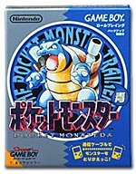
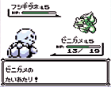
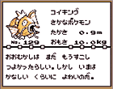
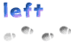

| ポケモンファンならノドから手が出る“幻のポケモンソフト”!! |
|  | 発売中 3,000円 1995,1996 Nintendo / Creatures inc. / GAME FREAK inc. 「アイツ、なんで『ポケットモンスター』ばかり何個も持ってるんだろう!?」というひとに贈り物をするのなら、その方がお持ちのカートリッジをチェック！じつは、同じように見える『ポケットモンスター』にも、いろんなバージョンがあるんです。その方、赤・緑・ピカチュウバージョン・金・銀のほかに、青はお持ちでしょうか!? |
| 『ポケットモンスター青』は数年前、ある雑誌の読者だけに期間限定で発売された、幻のソフトなんです。その後、ローソンのＬｏｐｐｉやポケモンセンターで販売されましたが、店頭にフツーに並ぶことはありませんでした。そのため、かなりのポケモン好きでも、持っていないってひとが多いんです。 しかし、『ポケットモンスター金・銀』の誕生を記念しての限定発売ってことで、現在は一般のお店でも買えるようになったんです。最近ポケモンファンになったひとには、まさにうってつけのプレゼントです。 |
|
|  | |
| ↓さらに詳しい情報はこちら 【http://www.nintendo.co.jp/n02/dmg/apej/index.html】 |
|
|  | ||